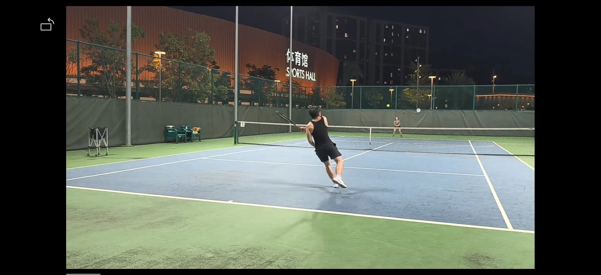

Human-centered intelligent transportation
Designing mobility systems around human abilities, limitations, trust, and safety.
I am a PhD student in Intelligent Transportation at The Hong Kong University of Science and Technology. My research examines human-centered intelligent transportation, human-AI interaction, aviation and eVTOL human factors, and multimodal psychophysiological sensing. I develop data-driven and hybrid-intelligence approaches to understand cognitive workload, improve pilot training, and support safer human supervision of automated mobility systems.
我是香港科技大学智能交通方向博士生，研究聚焦以人为中心的智能交通、人机协同、航空与 eVTOL 人因，以及多模态心理生理感知。我致力于通过数据驱动与混合智能方法理解认知负荷、改进飞行员训练，并支持人类对自动化交通系统进行更安全、有效的监督。
My master's supervisor was Prof. Chaozhe Jiang at Southwest Jiaotong University. I am currently supervised by Prof. Dengbo He at HKUST(GZ) and Prof. Hai Yang at HKUST.
硕士阶段师从西南交通大学蒋朝哲教授；博士阶段由香港科技大学（广州）贺登博教授与香港科技大学杨海教授共同指导。
Human capability, machine intelligence, and the interface between them.
Designing mobility systems around human abilities, limitations, trust, and safety.
Studying pilot workload, training, motion sickness, and supervised autonomous operations.
Combining EEG, ECG, respiration, eye tracking, and behavioral signals to model human state.
Developing transparent, trustworthy, and collaborative intelligence for safety-critical transport.
From information systems to safety engineering and intelligent transportation.
The Hong Kong University of Science and Technology · Clear Water Bay, Hong Kong
The Hong Kong University of Science and Technology (Guangzhou)
Southwest Jiaotong University · School of Transportation and Logistics
Sichuan University of Science and Engineering · School of Computer Science
Finding rhythm on the court, strength in training, and perspective outdoors.

Teamwork, tempo, and a good reason to step away from the screen.